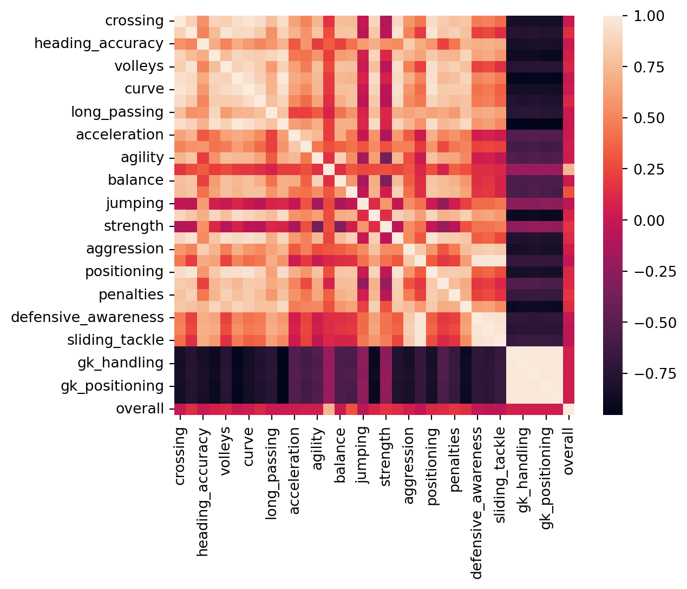

import re
import json
import requests
import pandas as pd
import seaborn as sns
import numpy as np
import matplotlib.pyplot as plt
import plotly.express as px
import warnings
warnings.filterwarnings("ignore")THE GOAL
For this assignment, I decided to challenge myself a little bit by not using a dataset that I found on Kaggle. In order to find a new data set, I did the reasonable thing and began my frantic google searches. What I found was that there is a plethora of well formatted data out there, most of it is just online as opposed to a nice and easy excel format. With this project I hope to familarize myself with the In’s and Out’s of webscraping and maybe clean a dataset and sprinkle in some visualizations just for the fun of it.
The Dataset
For this assignment, the first order of buisiness is to decide what to look at. I’m a big soccer fan so I figured I would take a look at something in relation to that. It would be interesting to create some radar plots of players as that is a visualization I have never used before so we will move forward with that in mind as our end goal.
After some research, I have decided to use the wonderful resource, <sofifa.com>. This site is one big table that contains the fifa stats for any football player who is currently in the fifa system, which is alot. The first thing we will do, as always, is we are going to prepare our standard visualization and cleaning packages for usage.
WEB-SCRAPING
Now, we are going to import a few more with the goal of Web-Scraping
import requests
import json
from bs4 import BeautifulSoupNow we want to familiarize ourselves with our website a little bit. Taking a look at the base homepage, we can see that every player has some basic information on display. We can see their Names, Age, Overall, potential, as well as their team and wage they make. Now when we click on an individual player, it gives us a much more thorough breakdown of their individual statistics. We can even see a radar plot, which is exactly what we will be making, however we will be making some adjustments and tweaks to it.
Looking around the site and some of the pages that are on here To begin, I am intested solely in players from the premier league. I need to specify this as my url so I will take this url as my base URL we will use to get general player stats
However, in accessing and web-scraping some websites, they have anti-botting software that can deny our request. Running a normal request.get() operation will result in our request being denied. To get around this we will be introducing some extra code as compared to a standard web scrape request.
base_url = "https://sofifa.com/players?type=all&lg%5B0%5D=13&offset=0"
req = requests.Session()
page = req.get(base_url, headers = {
"User-Agent": "Mozilla/5.0 (compatible; MSIE 8.0; Windows NT 6.3; Win64; x64)"
})
soup = BeautifulSoup(page.content, "html.parser")The main things to note are the usage of the request.session() function, which persists cookies across requests, and the header in req.get(), which essentially feeds the site some information to trick it into thinking it is a human making the request as opposed to a program.
DATA CLEANING
Now that we have (some) of our data into a nice looking data frame, let’s work on cleaning it up a little bit, not just for the aesthetics, but also the practicality of having a nice, clean data frame to work with.
#Code to clean up the names
player_name = players_dataframe.last_name #Create series to iterate through
for name in player_name:
name_split = ""
if name.find(".") != -1: #Only returns -1 if unable to find "." character
name_split = name.split(". ", 1)
players_dataframe["last_name"] = players_dataframe["last_name"].replace(name, name_split[1]) #Replace original dataframe with updated last name
else:
pass
#Code to clean up positions
players_dataframe[["position_1", "position_2", "position_3"]] = players_dataframe.position.str.split(" ", expand = True)
players_dataframe = players_dataframe.drop(columns="position")
#Code to clean up contract column; We don't (yet) have a way to determine contract specifics if player is on loan, for now just assign them a value showing they are loan
contract_length = players_dataframe.contract
for contract in contract_length:
fixed_contract = contract.removeprefix("\n")
players_dataframe["contract"] = players_dataframe["contract"].replace(contract, fixed_contract)
players_dataframe[["contract_start", "contract_end"]] = players_dataframe.contract.str.split(" ~ ", expand = True)
players_dataframe = players_dataframe.drop(columns="contract")
#Strip currency symbols & suffix from wage and value columns
players_dataframe["value"] = players_dataframe.value.str.removeprefix("€")
players_dataframe["wage"] = players_dataframe.wage.str.removeprefix("€")
#Remove suffix from value, convert to total amounts
for value in players_dataframe.value:
replace_value = 0
if value.find("M") != -1:
replace_value = value.removesuffix("M")
replace_value = int(float(replace_value)) * 1000000
players_dataframe["value"] = players_dataframe["value"].replace(value, replace_value)
elif value.find("K") != -1:
replace_value = value.removesuffix("K")
replace_value = int(float(replace_value)) * 1000
players_dataframe["value"] = players_dataframe["value"].replace(value, replace_value)
#Same thing but with wages
for wage in players_dataframe.wage:
replace_wage = 0
if wage.find("M") != -1:
replace_wage = wage.removesuffix("M")
replace_wage = int(float(replace_wage)) * 1000000
players_dataframe["wage"] = players_dataframe["wage"].replace(wage, replace_wage)
elif wage.find("K") != -1:
replace_wage = wage.removesuffix("K")
replace_wage = int(float(replace_wage)) * 1000
players_dataframe["wage"] = players_dataframe["wage"].replace(wage, replace_wage)
print(players_dataframe.head(5)) last_name age overall potential team value wage \
0 De Bruyne 31 91 91 Manchester City 107000000 350000
1 Haaland 21 90 94 Manchester City 176000000 240000
2 Salah 30 89 89 Liverpool 99000000 260000
3 Alisson 29 89 90 Liverpool 79000000 190000
4 Casemiro 30 89 89 Manchester United 86000000 240000
stats id position_1 position_2 position_3 contract_start contract_end
0 2299 192985 CM CAM None 2015 2025
1 2144 239085 ST None None 2022 2027
2 2208 209331 RW None None 2017 2025
3 1437 212831 GK None None 2018 2027
4 2251 200145 CDM None None 2022 2026 Alright. So now we have gotten some preliminary information on each player. But the real analysis of their playstyle is really only seen in the semantics. We want to get into the nitty gritty for each of these players and see what picture their stats and abilities paint of their playstyle. Let’s see if we can can use that unique identifier we saved earlier to access all data for each player.
#Rescrape each player's separate stat page
fifa_stats = { #Create new dictionary to store the fifa values of players different stats, later merge with original df
"crossing": [],
"finishing": [],
"heading_accuracy": [],
"short_passing": [],
"volleys": [],
"dribbling": [],
"curve": [],
"fk_accuracy": [],
"long_passing": [],
"ball_control": [],
"acceleration": [],
"sprint_speed": [],
"agility": [],
"reactions": [],
"balance": [],
"shot_power": [],
"jumping": [],
"stamina": [],
"strength": [],
"long_shots": [],
"aggression": [],
"interceptions": [],
"positioning": [],
"vision": [],
"penalties": [],
"composure": [],
"defensive_awareness": [],
"standing_tackle": [],
"sliding_tackle": [],
"gk_diving": [],
"gk_handling": [],
"gk_kicking": [],
"gk_positioning": [],
"gk_reflexes": []
}
for player_id in players_dataframe.id:
a = 0
#Web-Scrape to get fifa stats from webpage
base_url = "https://sofifa.com/player/" + player_id
req = requests.Session()
page = req.get(base_url, headers = {
"User-Agent": "Mozilla/5.0 (compatible; MSIE 8.0; Windows NT 6.3; Win64; x64)"
})
soup = BeautifulSoup(page.content, "html.parser")
#After successful web scrape, grab all stats from page, scrape away ones we don't need, append values to fifa dict
player_stats = soup.find_all(class_=re.compile("bp3-tag p p-"))
#print(len(player_stats))
if len(player_stats) == 66:
del player_stats[0:32] #Remove initial entries in list as we only care about the player stats
else:
del player_stats[0:31] #Some players have only 65 calls bp3-tag objects, take care of those instances as well
for stat in fifa_stats:
fifa_stats[stat].append(int(player_stats[a].get_text()))
a = a + 1
fifa_stats_df=pd.DataFrame(fifa_stats)
#Now we can join together these two dataframes
player_stats_df = pd.concat([players_dataframe, fifa_stats_df], axis=1, join="inner")
print(player_stats_df.head(5)) last_name age overall potential team value wage \
0 De Bruyne 31 91 91 Manchester City 107000000 350000
1 Haaland 21 90 94 Manchester City 176000000 240000
2 Salah 30 89 89 Liverpool 99000000 260000
3 Alisson 29 89 90 Liverpool 79000000 190000
4 Casemiro 30 89 89 Manchester United 86000000 240000
stats id position_1 ... penalties composure defensive_awareness \
0 2299 192985 CM ... 83 88 66
1 2144 239085 ST ... 84 87 41
2 2208 209331 RW ... 81 90 38
3 1437 212831 GK ... 23 66 15
4 2251 200145 CDM ... 66 85 90
standing_tackle sliding_tackle gk_diving gk_handling gk_kicking \
0 66 53 15 13 5
1 53 29 7 14 13
2 43 41 14 14 9
3 19 16 86 85 85
4 89 88 13 14 16
gk_positioning gk_reflexes
0 10 13
1 11 7
2 11 14
3 90 89
4 12 12
[5 rows x 48 columns]Looking good! Now we have a nicely sized dataframe that stores all data and stats of our webscraped players. Since this is mostly cleaned and ready for usage, we can now move onto creating our radar plots!
Visualizations
Just for the fun of it we’ll make a correlation matrix to see what stats most heavily influence a player’s overall rating because I think that it would be interesting to see if this is simply an average of all statistics for players or if the overall is more dependent on certain stats.
#Convert overall to int, add to player stats df, create correlation heatmap
corrmat = fifa_stats_df.join(players_dataframe["overall"]).corr()
sns.heatmap(corrmat, square=True)<Axes: >
For our next little project, we will be moving onto the spider plots.
I liked the idea of grouping the players’ stats into categories, as a radar plot with as many points as we have columns would not be a great visualization. I decided to group the stats into different categories based on their function. Once we make those categories, we can then simply take the average of the datapoints in them and use that as one of values to plot on the Radar plot.
#for usage later in dataframe
names = ["attacking", "passing", "physicality", "pace", "dribbling", "mentality", "defending", "goalkeeping"]
average = [0, 0, 0, 0, 0, 0, 0, 0]
#create loop to make categories for each player
for index, row in player_stats_df.iterrows():
#First assign values to a list, then map them as INT, then get mean. Repeat for every point of radar plot
attacking_col = [row["finishing"], row["heading_accuracy"], row["volleys"], row["shot_power"], row["long_shots"]]
attacking_col = list(map(int, attacking_col))
average[0] = np.mean(attacking_col)
passing_col = [row["short_passing"], row["long_passing"], row["crossing"], row["fk_accuracy"]]
passing_col = list(map(int, passing_col))
average[1] = np.mean(passing_col)
physicality_col = [row["reactions"], row["balance"], row["strength"], row["jumping"]]
physicality_col = list(map(int, physicality_col))
average[2] = np.mean(physicality_col)
pace_col = [row["acceleration"], row["sprint_speed"], row["agility"]]
pace_col = list(map(int, pace_col))
average[3] = np.mean(pace_col)
dribbling_col = [row["dribbling"], row["ball_control"]]
dribbling_col = list(map(int, dribbling_col))
average[4] = np.mean(dribbling_col)
mentality_col = [row["aggression"], row["positioning"], row["vision"], row["composure"]]
mentality_col = list(map(int, mentality_col))
average[5] = np.mean(mentality_col)
defending_col = [row["interceptions"], row["defensive_awareness"], row["standing_tackle"], row["sliding_tackle"]]
defending_col = list(map(int, defending_col))
average[6] = np.mean(defending_col)
goalkeeping_col = [row["gk_diving"], row["gk_handling"], row["gk_kicking"], row["gk_positioning"], row["gk_reflexes"]]
goalkeeping_col = list(map(int, goalkeeping_col))
average[7] = np.mean(goalkeeping_col)
#Create dataframe to make radar plot
data_dict = {"names": names, "average": average}
df = pd.DataFrame(data_dict)
#Create and show graphs for every player
fig = px.line_polar(df, r="average", theta ="names", line_close=True)
fig.update_traces(fill="toself")
print("Player:", row["last_name"],",", "Overall:", row["overall"],",", "Position:", row["position_1"])
fig.show()Player: De Bruyne , Overall: 91 , Position: CM
Player: Haaland , Overall: 90 , Position: ST
Player: Salah , Overall: 89 , Position: RW
Player: Alisson , Overall: 89 , Position: GK
Player: Casemiro , Overall: 89 , Position: CDM
Player: Kane , Overall: 89 , Position: ST
Player: van Dijk , Overall: 88 , Position: CB
Player: Ederson , Overall: 88 , Position: GK
Player: Bernardo Silva , Overall: 88 , Position: CM
Player: Rúben Dias , Overall: 88 , Position: CB
Player: Son , Overall: 88 , Position: LW
Player: Kanté , Overall: 87 , Position: CDM
Player: Rodri , Overall: 87 , Position: CDM
Player: De Gea , Overall: 87 , Position: GK
Player: Bruno Fernandes , Overall: 87 , Position: CAM
Player: Ødegaard , Overall: 86 , Position: CAM
Player: Robertson , Overall: 86 , Position: LB
Player: Laporte , Overall: 86 , Position: CB
Player: Navas , Overall: 86 , Position: GK
Player: Partey , Overall: 85 , Position: CDM
Player: Saka , Overall: 85 , Position: RW
Player: Martínez , Overall: 85 , Position: GK
Player: Thiago Silva , Overall: 85 , Position: CB
Player: Sterling , Overall: 85 , Position: LW
Player: Thiago , Overall: 85 , Position: CM
Player: Fabinho , Overall: 85 , Position: CDM
Player: Alexander-Arnold , Overall: 85 , Position: RB
Player: Gündoğan , Overall: 85 , Position: CM
Player: Mahrez , Overall: 85 , Position: RW
Player: Varane , Overall: 85 , Position: CB
Player: Rashford , Overall: 85 , Position: LW
Player: Jorginho , Overall: 84 , Position: CM
Player: Gabriel Jesus , Overall: 84 , Position: ST
Player: Koulibaly , Overall: 84 , Position: CB
Player: James , Overall: 84 , Position: RWB
Player: Diogo Jota , Overall: 84 , Position: CF
Player: Díaz , Overall: 84 , Position: LW
Player: Walker , Overall: 84 , Position: RB
Player: Grealish , Overall: 84 , Position: LW
Player: Foden , Overall: 84 , Position: LW
Player: Trippier , Overall: 84 , Position: RB
Player: Bruno Guimarães , Overall: 84 , Position: CM
Player: Lloris , Overall: 84 , Position: GK
Player: Højbjerg , Overall: 84 , Position: CDM
Player: Rice , Overall: 84 , Position: CDM
Player: Maddison , Overall: 84 , Position: RM
Player: Ramsdale , Overall: 83 , Position: GK
Player: Saliba , Overall: 83 , Position: CB
Player: Mendy , Overall: 83 , Position: GK
Player: Havertz , Overall: 83 , Position: CAM
Player: João Félix , Overall: 83 , Position: CF
Player: Roberto Firmino , Overall: 83 , Position: CF
Player: Gakpo , Overall: 83 , Position: CF
Player: Stones , Overall: 83 , Position: CB
Player: Eriksen , Overall: 83 , Position: CM
Player: Martínez , Overall: 83 , Position: CB
Player: Pope , Overall: 83 , Position: GK
Player: Botman , Overall: 83 , Position: CB
Player: Romero , Overall: 83 , Position: CB
Player: Tielemans , Overall: 83 , Position: CMAnd there we go! They’re not the most informative or beatiful visualizations, but they were largely just for practice in webscraping anyways. This was an excellent project that familiarized myself with the ins and outs of web scraping.